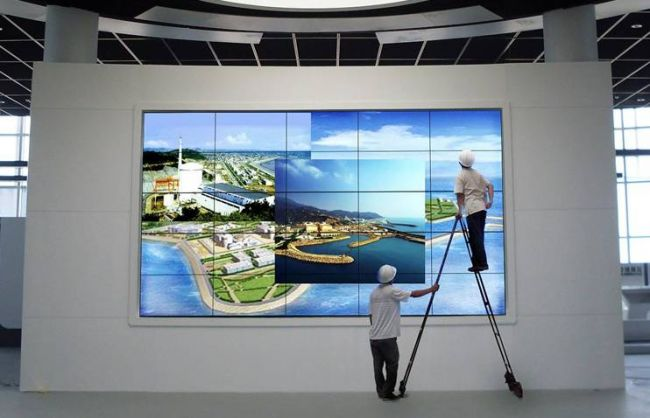

很多用户在选购显示设备时，常常十分在意设备的各种参数指标，其中之一就是亮度。但是，关于亮度，市面上的不同设备上往往标注着各种各样的亮度单位。它们代表什么意思？如何进行比较或换算？对于显示设备性能又有着什么样的参考价值？本文给你答案。

对显示设备而言，亮度是一个十分关键的性能衡量指标。而亮度又是以坎德拉每平方米（cd/m2）或尼特（nit）来衡量。就像汽车发动机的功率是用“马力”表示一样，尼特也是如此。其代表的意义是一台显示器的亮度相当于多少支蜡烛的亮度。300尼特桌面显示器的光量相当于300支蜡烛在1平方米空间的亮度。1500尼特户外显示屏则相当于1500支蜡烛的照度。
此外，尼特与ANSI流明（前投影解决方案中的通用规范）不是一码事儿。1流明代表一支蜡烛在恒定距离处单位平方米面积内反射的光量。可以用流明来测量反射光，而用尼特来衡量直射光。这就是为什么投影机亮度通常用流明，而显示器（包括背投）采用尼特的原因所在。有时，投影安装是以福特朗伯（foot-lamberts，简称FL）来计算，就相当于每平方米1流明的亮度，目的是使更亮的房间产生更高的感知亮度屏幕反射。1尼特相当于约0.292FL。
回到显示器上，为了测量显示器的亮度，需要在屏幕上显示一些画面。通常情况下，当屏幕显示全白画面时，从边到边，从上到下，进行亮度测量。对于像液晶显示器这样需要背光源的显示器，进行全白测量可以知道该显示器能够实现的最大光输出。尽管用户不大可能在屏幕上显示全白图像，但这一数值却代表了该显示器能达到的最高亮度。
而对于自发光显示设备（如等离子、OLED或LED屏），亮度计算较为困难。因为每个像素是被直接寻址（并根据指向该像素的内容而被开启或关闭），所以每个像素的亮度将随着驱动像素的功率在所有像素间的共享而变化。例如，显示一幅全白画面，测出的亮度会低于在屏幕中间显示一个白色小方块的亮度。这两种情况分别代表了常见的两个指标，一个是标准亮度测量（即典型值），另一个是峰值亮度测量（即峰值）。
到这里就清楚了，如果有人问出“这台显示设备有多亮”的问题，很难直接回答他。这要取决于具体的测量值，以及所采用的显示技术，还有测量时屏幕上显示的是什么内容。